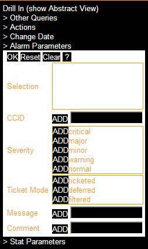

Use the Alarm Parameters screen to customize the alarm data displayed in Visualizer.

Figure 8-7 Alarm Parameters
Enter a CCID (correlation ID), or a specific phrase or line that appears in the Message or Comment field of individual alarms. Click the ADD button to move field contents to the Selection pane. Repeat until all selections are complete for this set of parameters.
Move individual Severity and/or Ticket Mode types to the Selection pane by clicking on the ADD button.
You may remove individual items from the Selection pane by clicking on the DEL button.
The following actions are available:
Reset – drops any changes made by the user and reverts to the previously specified parameters for the current page.
Clear – removes all content from the Selection pane
OK – gathers the data entered, closes the section, and reverts to the full drop-down menu.
? – provides online details about this parameter
Warning! You must click OK at the top of the drop down menu in order to apply the entered values to the next query.